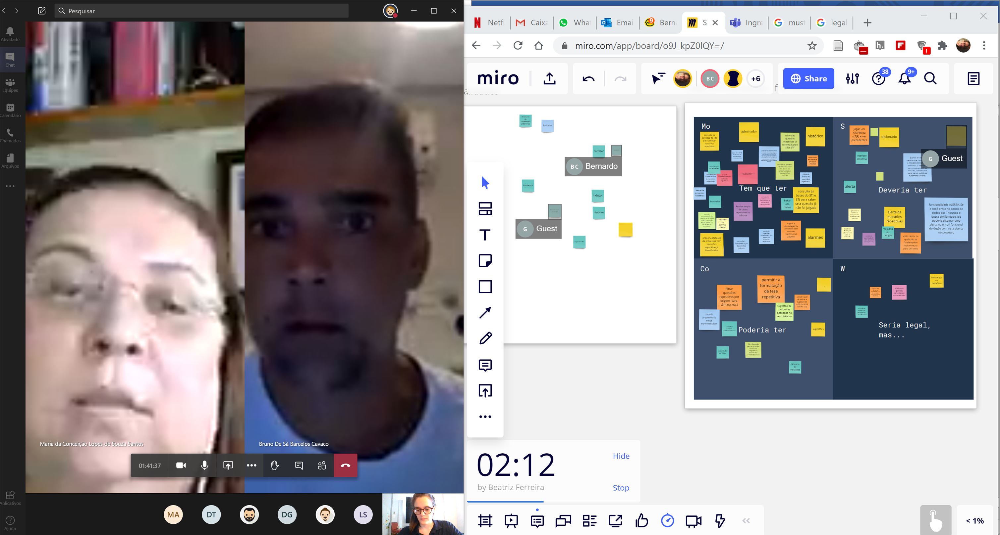
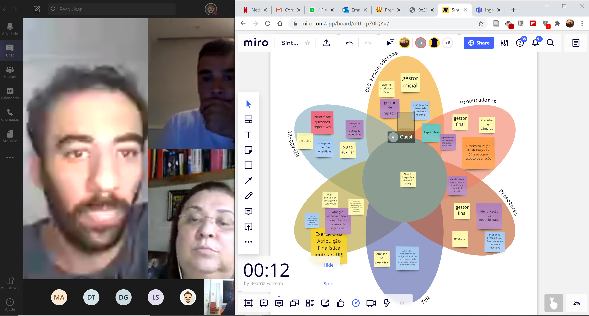
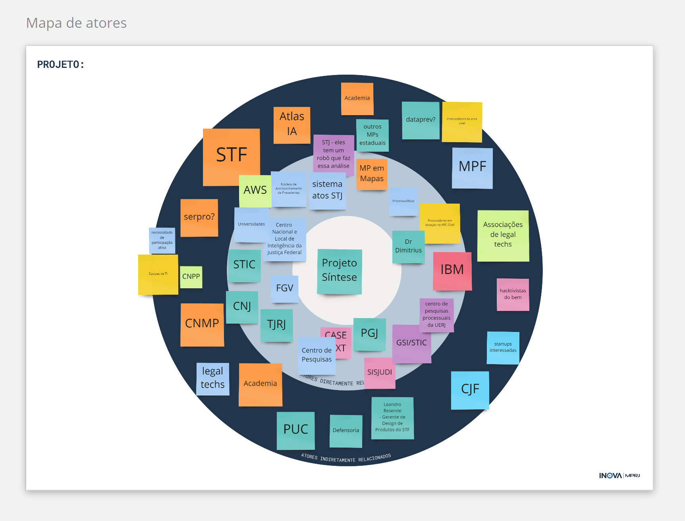
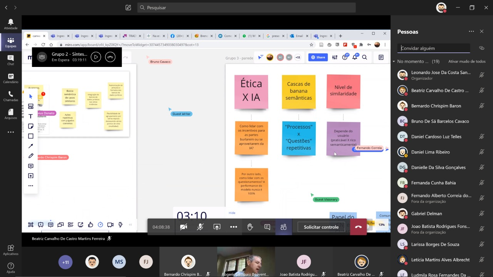
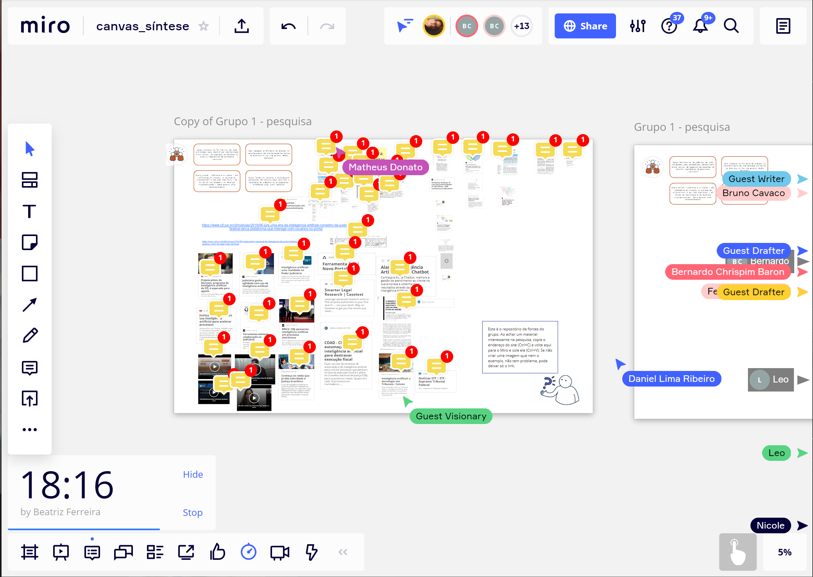
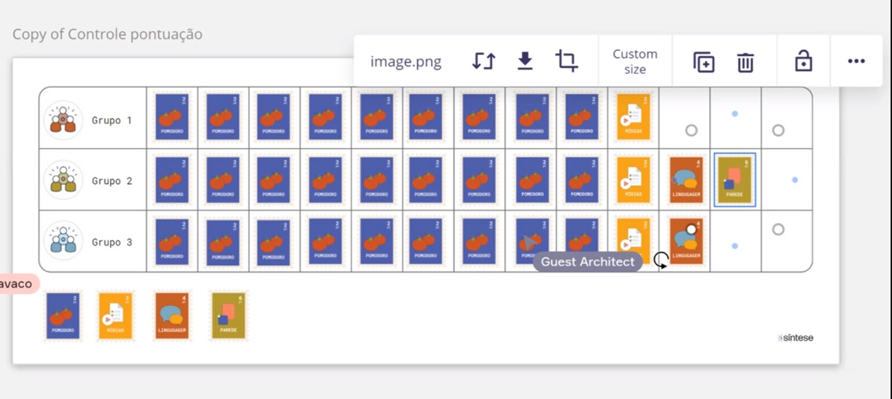

Exploração coletiva do desafio e mapeamento de atores
Em, 16 de julho de 2020, o Inova_MPRJ realizou uma primeira atividade colaborativa, voltada à
exploração coletiva do desafio e ao
mapeamento de atores. Participaram representantes do CAO Procuradorias, do Núcleo de Articulação e Integração (NAI) e do próprio Laboratório; além de promotores e procuradores de justiça especialistas no tema.

Foi o momento de explorar a inteligência coletiva e identificar as diferentes perspectivas em torno do desafio. Ao preencherem o canvas de redefinição do desfio, os participantes definiram uma visão compartilhada para os próximos passos do projeto. Em seguida, mapearam possíveis parceiros estratégicos, no Mapa de Atores.

Pesquisatona
Em 24 de julho de 2020, o Laboratório realizou uma nova atividade coletiva: a Pesquisatona. Essa atividade consiste em um
esforço concentrado de pesquisa voltado a encontrar as melhores práticas no tema do desafio enfrentando.
Os participantes pesquisaram soluções digitais relacionadas à detecção de questões repetitivas no sistema de justiça, no Brasil e no exterior. Além disso, a atividade focou em estratégias de contratação inovadoras pelo Poder Público, que permitissem ao MPRJ a eventual contratação das soluções de modo mais ágil e eficiente.
Participaram integrantes do CAO Procuradorias e do Laboratório, promotores e procuradores de justiça interessados no tema. A atividade contou também com a participação de integrantes da Secretaria de Gestão da Informação do Tribunal de Contas da União (SGI/TCU) e do Laboratório de Inteligência Computacional Aplicada da Pontifícia Universidade Católica do Rio de Janeiro (ICA/PUC-Rio).

Reconhecimento de soluções existentes
MAIA é uma solução de inteligência artificial que burca proporcionar aos tribunais dados qualitativos e quantitativos sobre as demandas repetitivas existentes. O objetivo é permitir que o Poder Judiciário aborde os processos pendentes de julgamento de modo mais eficaz.
Entre as soluções encontradas pelo Inova_MPRJ durante a pesquisa de mesa, a solução da startup catarinense foi a única desenhada especificamente para a apoiar o uso do IRDR.
Isso se reflete na existência de uma interface gráfica para que o usuário classifique as sugestões do algoritmo em pertinentes e não pertinentes. Nessa mesma interface, é possível ter acesso a dados básicos de inteligência de negócios, como o estoque de processos potencialmente afetados por uma questão repetitiva.
A MAIA utiliza algoritmos de aprendizado não supervisionado e de aprendizado por reforço implementados em Python. Para treinar os modelos, a startup utilizou dados de decisões judiciais do TJSC, onde a solução passou por sua primeira prova de conceito.
LEIA Precedentes – Softplan
LEIA Precedentes é um módulo do SAJ – sistema de gestão digital para tribunais, desenvolvido pela Softplan. A LEIA funciona de forma integrada com o restante do sistema, tendo como mote principal a detecção e indicação dos processos afetados por precedentes obrigatórios já estabelecidos pelo STF e pelo STJ.
Atualmente, o módulo conta com 55 temas que podem ser detectados por meio de varreduras em todo o estoque de processos dos tribunais usuários do SAJ. Para cada tema, está implementada consulta baseada em uma matriz de análise semântica latente e em tecnologia ElasticSearch.
O processo de definição de um novo tema depende da intervenção de um time multidisciplinar, que configura os parâmetros de busca de acordo com os aspectos juridicamente relevantes. A otimização desses parâmetros e da matriz é realizado em rodadas sucessivas de validação por usuários do Tribunal, até a solução alcançar 75% de valor preditivo positivo.
Em testes no TJSP, a ferramenta indicou aproximadamente 7% do estoque de processos públicos do Tribunal como vinculáveis a pelo menos um dos temas pesquisados. Dessa fração, em até 23% dos casos a sugestão da ferramenta foi acatada pelo magistrado.
O Radar nasceu como solução de indexação automática dos processos do TJMG. O objetivo que moveu a equipe do Tribunal a desenvolver a solução era superar as limitações da busca de processos baseada em classe, assunto ou em índices cadastrados manualmente.
Tendo em vista a diversidade de sistemas em utilização no Tribunal, a equipe da Coordenação de Desenvolvimento e Manutenção de Sistemas Judiciais da 2ª Instância (COJUD 2ª) desenvolveu um sistema modular, baseado em microsserviços.
Essa arquitetura implementa um banco de dados não-relacional, baseado na suíte Elasticsearch. Essa mesma suíte fornece aos algoritmos responsáveis por recuperar o conteúdo mais relevante para as buscas dos usuários, a partir de filtros e da similaridade dos termos com decisões e peças armazenadas pelo Tribunal.
Apesar de ter contribuído significativamente para a gestão do conhecimento no TJMG, a ferramenta não foi desenhada especificamente para identificar grupos de processos com questões jurídicas em comum. Temporariamente, a equipe do Tribunal tem lidado com esse desafio por meio do cadastro manual de palavras-chave para documentos relevantes – por exemplo, súmulas do STJ.
Modelo de similaridade de petições iniciais – TJRO
O modelo de similaridade de petições iniciais é apenas um dos modelos desenvolvidos no SINAPSES – plataforma de colaboração em inteligência artificial criada pelo TJRO e disponibilizada aos tribunais de todo o país a partir de convênio com o CNJ.
Como os demais modelos no SINAPSES, o modelo de similaridade de petições iniciais é acessível por meio de API, que recebe o texto do documento e retorna uma lista de petições consideradas mais parecidas. Além disso, há uma interface gráfica para prototipação, ajuste e auditoria dos modelos.
Atualmente, o modelo de similaridade textual está adaptado apenas aos tribunais usuários do PJe, por meio da ferramenta CODEX. Ainda assim, o Inova_MPRJ considera que a adoção do SINAPSES pode trazer ganhos à colaboração em inteligência artificial no sistema de justiça como um todo. Por isso, o Laboratório solicitou ao CNJ a adesão do MPRJ à plataforma – o que o tornaria a primeira instituição externa ao Poder Judiciário a fazê-lo.
Elaboração da estratégia de testes, doação e eventual contratação das soluções
Como o mapeamento das soluções existentes se mostrou promissor, a equipe do Laboratório optou por testar as soluções que se destacaram e criar oportunidades para o levantamento de outras potenciais soluções que não foram identificadas durante o mapeamento ou na Pesquisatona.
A lógica tradicional das contratações públicas pressupõe que a Administração saiba em detalhes qual é a solução que deseja contratar, definindo as características do produto ou serviço em um projeto básico.
No caso de contratações inovadoras, principalmente as que envolvem inteligência artificial, essa suposição pode inviabilizar a aquisição – afinal, nem sempre se sabe com antecedência qual solução se sairá melhor em umcaso de uso específico. Pior: uma contratação sem testar o desempenho de todas as soluções concorrentes pode levar o Poder Público a contratar um produto que não atende às suas necessidades.
Por essas razões, a equipe do Laboratório formulou um procedimento para teste das soluções existentes no mercado. Tal teste atende a dois princípios do Laboratório: não reinventar a roda, evitando o investimento de esforço na criação de soluções quando já existem alternativas desenvolvidas ou em desenvolvimento; e testar antes de comprar, permitindo o uso adequado dos recursos orçamentários da Instituição.
Configuração jurídica do procedimento de testes
O teste de soluções como insumo para decisões de compras públicas é um mecanismo importante, mas ainda insuficientemente explorado no Brasil. Apesar do pouco uso prático, a Administração possui um instrumento à disposição para essa finalidade: a chamada pública para testes.
Trata-se de modalidade de chamada pública prevista em normas sobre contratação de soluções de TI e vista pelo TCU como boa prática em contratações dessa natureza.
Na definição da configuração jurídica do procedimento de teste do Síntese, o Laboratório se baseou nessas normas e orientações. Detalhamos a seguir cada uma delas.
A jurisprudência do TCU
No caso do TCU, há clara orientação em favor da realização de testes antes da contratação de determinadas soluções. Não é difícil encontrar precedentes em que o Tribunal oriente que, previamente às contratações de soluções de TI, a Administração promova o levantamento e o teste das soluções disponíveis no mercado, por meio da elaboração de uma chamada pública específica para essa finalidade.2
Outra orientação importante do TCU é garantir que os requisitos de negócio das soluções de TI a serem testadas ou contratadas sejam definidos antes de qualquer procedimento de teste ou contratação.
Para o Tribunal, o momento da definição dos requisitos de negócio é um passo fundamental. Caso eles sejam definidos posteriormente aos testes, pode haver direcionamento do objeto da contratação.
No entanto, ao contrário do que
se tem interpretado da jurisprudência do TCU sobre o tema, a Corte não restringe a realização testes desoluções pela Administração apenas à fase externa de licitações. A orientação do Tribunal é clara: os testes são possíveis e até desejáveis, desde que os requisitos de negócio sejam definidos previamente.
A resolução nº 102 do CNMP
Outra importante norma seguida pelo Laboratório na formatação do procedimento de teste foi a Resolução n. 102 do CNMP. No mesmo sentido da jurisprudência do TCU, a norma determina que os requisitos de negócio de soluções de TI sejam definidos previamente a eventual contratação.3
Além disso, a Resolução prevê como passos iniciais destinados a esse tipo de contratação o levantamento de soluções disponíveis no mercado e a identificação das diferentes soluções que atendam aos requisitos de negócio.4 Ambos são passos comuns às contratações de soluções de TI pela Administração (regras semelhantes são previstas pela Instrução Normativa SGD/ME n. 1, de 4 de abril de 2019, que dispõe sobre o processo de contratação de soluções de TI pelos órgãos e entidades integrantes do Poder Executivo Federal).
Procedimentos semelhantes
No processo de definição da estratégia de testes, o Inova_MPRJ se baseou também em procedimentos elaborados por outros órgãos e entidades públicas para reconhecimento desoluções de mercado. Entre essas experiências, se destacaram as descritas na tabela abaixo:
Procedimentos de chamada pública que inspiraram o Síntese
documento
órgão/entidade responsável
Ministério Público do Estado de São Paulo
Chamar interessados a apresentarem soluções inovadoras, de acordo com procedimento abaixo descrito e com os termos do Ato nº 1060/2017 - PGJ, 27 de novembro de 2017, conforme de
Chamar interessados a apresentarem soluções inovadoras na temática do PTE- MG, instituído pela Lei nº 21.777, de 29 de setembro de 2015, contribuindo na resolução do desafio e problema técnico específico detalhado no Anexo I.
Secretaria de Estado de Educação de Minas Gerais
Promove[r] testes, na forma de uma prova de conceito (POC), de hospedagem de uma aplicação em uma plataforma de Computação na Nuvem, integrada com aplicações hospedadas em seu datacenter [...].
Companhia de Tecnologia da Informação do Estado de Minas Gerais
Promove[r] testes, na forma de uma prova de conceito (PoC), de implantação de uma solução de Gestão de Processos Judiciais, em ambiente de procuradoria, integrada com TJRJ – Tribunal de Justiça do Rio de Janeiro e com a Dívida Ativa, hospedada na nuvem [...].
Procuradoria-Geral do Município de Niterói
Prefeitura do Município de Maringá
[...] Chamamento público para teste de novas tecnologias de semáforos inteligentes, visando a aferição da especificação técnica para posterior aquisição através de licitação.
Empresa Pública de Transporte e Circulação de Porto Alegre
Chamar interessados a apresentarem soluções inovadoras, de acordo com procedimento abaixo descrito e com os termos da Lei nº 10.407/2017, nas áreas de Saúde, Educação, Semulher, Procon, Seide e Semuc, facilidades ao cidadão, conforme desafios expressos no item 3 seguintes e Anexos I, II, III, IV, V e VI.
objeto
Estratégia de doação
A elaboração da estratégia de contratação e parcerias envolveu, além do teste, uma outra dimensão de pesquisa - dos instrumentos jurídicos adequados ao desenvolvimento conjunto e de possível doação de soluções ao MPRJ (pelos participantes da chamada pública ou por outros interessados).
No quadro normativo brasileiro, há um vácuo de normas voltadas à regular parcerias entre o setor público e entidades privadas com fins lucrativos. Para supri-lo, há uma corrente que defende a extensão das normas da Lei n. 13.019, de 31 de julho de 2014 (denominada Marco Legal das Organizações Sociais), às parcerias estabelecidas entre o Estado e aquelas entidades (não apenas com entidades sem fins lucrativos, como prevê a Lei). Na visão do Inova_MPRJ, não parece ser esse o caminho adequado. Estender a aplicabilidade de uma norma a uma hipótese que ela não previu é subverter o desenho imaginado pelo legislador.
A partir do ano de 2018, outro movimento normativo ganhou destaque. Trata-se da regulação da doação de bens móveis e serviços à Administração. Pioneiro na regulamentação do assunto, o Município de São Paulo editou o
Decreto n. 58.102, de 23 de fevereiro de 2018, específico sobre o tema. Logo após, outros estados editaram normas semelhantes o
Estado de São Paulo, de
Minas Gerais, de
Goiás e do
Pará.
Em 2019, foi a vez da União regulamentar o assunto em âmbito federal. Publicado em 11 de abril daquele ano, o Decreto n. 9.764 consolidou boas práticas estabelecidas nas normas que o antecederam e foi além: previu que as “doações de bens móveis e de serviços têm por finalidade o interesse público e buscarão, sempre que possível, a ampliação da relação com startups e o exercício do empreendedorismo inovador e intensivo em conhecimento [...]”. Tornou-se, assim, um importante instrumento de parcerias entre instituições públicas e privadas. Tornou-se, assim, um importante instrumento de parcerias entre instituições públicas e privadas para ações inovadoras.
No Síntese, o Inova_MPRJ seguiu o exemplo do Decreto 9.764. Ao lado do procedimento de teste, o edital de chamada pública previu também o procedimento de doação, seguindo as normas do mesmo Decreto. A oportunidade de doação é aberta tanto aos participantes dos testes quanto a qualquer outro interessado.
Lançamento da minuta de edital da chamada pública
Tendo em vista os atos normativos e as experiências levantadas, a equipe do Laboratório entendeu que a realização de uma chamada pública era o melhor caminho para permitir que pessoas físicas e jurídicas apresentassem ao MPRJ o que já há em desenvolvimento no mercado. A partir desse reconhecimento, a Instituição pode definir rumos mais compatíveis com as suas necessidades e objetivos estratégicos.
Como medida destinada a potencializar a transparência e a participação pública no procedimento, o Inova_MPRJ disponibilizou a minuta de edital produzida pelo Laboratório para comentários públicos. O documento ficou disponível para comentários entre os dias 8 e 28 de setembro.
O lançamento da minuta para comentários foi acompanhado de uma campanha de comunicação com foco em pessoas, entidades e coletivos envolvidos com inovação e inteligência artificial em direito.
Em linha com a jurisprudência do TCU, a minuta já continha a relação de requisitos de negócio da solução de interesse pelo MPRJ (Anexo I do Edital). Essa medida dá publicidade aos requisitos, abrindo, inclusive, chance para sugestões de melhorias, e evitando risco de direcionamento posterior.
A minuta de edital previu também a possibilidade de doação ao final do procedimento, seguindo as normas do Decreto 9.764. Pelo documento, a oportunidade de doação seria aberta tanto aosparticipantes dos testes quanto a qualquer outro interessado.
A minuta do Edital, a devolutiva dos comentários e a versão consolidada após a consulta pública podem ser acessadas
no site do projeto.